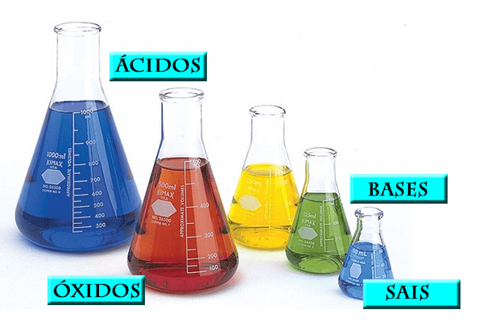

1 FUNÇÕES INORGÂNICAS
Devido à grande quantidade de substâncias inorgânicas existentes, elas foram agrupadas em categorias para facilitar sua análise. Essas categorias são denominadas funções inorgânicas. As quatro principais funções inorgânicas são ácidos, bases, sais e óxidos. Cada função inclui um conjunto de substâncias que compartilham propriedades químicas semelhantes, ou seja, apresentam comportamentos semelhantes em relação a determinados compostos químicos. Essas semelhanças decorrem das características comuns em suas fórmulas químicas, isto é, em sua composição (FOGAÇA, 2023a).
1.1 ÁCIDOS
Uma das funções inorgânicas é a dos ácidos, que são amplamente utilizados em várias aplicações e podem ser encontrados em diversos produtos do nosso dia a dia. Por exemplo, frutas como limão e laranja contêm ácido cítrico (C6H8O7), solução de ácido sulfúrico (H2SO4) é usada em baterías de automóveis, ácido muriático é empregado na limpeza de azulejos, pedras contêm ácido clorídrico impuro (HCl) como seu principal componente e o ácido acético (C2H4O2) está presente no vinagre (FOGAÇA, 2023b).
1.2 BASES
A classificação de base é dada a substâncias inorgânicas que, quando em contato com a água, sofrem dissociação e liberam íons hidroxila (-OH-), conforme a teoria ácido-base de Arrhenius. Essa dissociação resulta no aumento da concentração de íons OH- no meio, o que pode ser usado para avaliar a acidez ou basicidade de soluções. Valores de pH acima de 7 indicam soluções básicas.As bases são compostas por íons e formam soluções eletrolíticas. Elas têm sabor adstringente e algumas podem ser altamente corrosivas, prejudiciais para olhos, pele e mucosas. Quando reagem com ácidos, as bases passam por uma reação de neutralização que produz sal e água (BATISTA, 2023b).
1.3 SAIS
Em solução aquosa, uma substância pode ser considerada um sal se sofrer dissociação e liberar pelo menos um cátion e um ânion diferentes de H+ (ou H3 O+) e OH-, respectivamente. A formação de sais ocorre principalmente pela reação de neutralização entre um ácido e uma base. Nessa reação, o cátion H+ do ácido reage com o ânion OH- da base, formando água e neutralizando o meio. Simultaneamente, o cátion fornecido pela base se combina com o ânion fornecido pelo ácido, formando um sal (FOGAÇA, 2023c). Segue abaixo um exemplo:
Ácido + Base → Sal + Água
HNO3(aq) + KOH(aq) → KNO3(aq) + H2 O(l)
1.4 ÓXIDOS
Os óxidos são compostos formados por dois elementos, sendo o mais eletronegativo o oxigênio. Eles são bivalentes, o que significa que não podem conter flúor, pois este é mais eletronegativo que o oxigênio. Portanto, compostos como OF2 e O2F2 não são considerados óxidos, mas sim fluoretos de oxigênio.Há dois tipos de óxidos: os óxidos moleculares e os óxidos iônicos. Os óxidos moleculares são formados por ligações covalentes entre átomos de ametais e o oxigênio, como é o caso de CO, CO2, SO3 e Cl3O7. Já os óxidos iônicos são compostos formados por ligações iônicas entre o oxigênio e metais, como é o caso de Na2O, CaO e Fe2O3 (BATISTA, 2023).
Figura 1 - Frascos ilustrativos
Fonte: Gestão Educacional, 2023
REFERÊNCIAS
ALESSI, Nicole. Funções inorgânicas – O que são? Para que servem?. Gestão Educacional. Dísponivel em: https://www.gestaoeducacional.com.br/funcoes-inorganicas-o-que-sao/. Acesso em: 3 abr. 2023.
BATISTA, Carolina. Funções inorgânicas. Toda Matéria. Disponível em: https://www.todamateria.com.br/funcoes-inorganicas/. Acesso em: 3 abr. 2023.
FOGAÇA, Jennifer. Funções inorgânicas. Manual da química. Disponível em: https://www.manualdaquimica.com/quimica-inorganica/funcoes-inorganicas.htm. Acesso em: 5 abr. 2023a.
FOGAÇA, Jennifer. Ácidos. Manual da química. Disponível em: https://www.manualdaquimica.com/quimica-inorganica/Acidos.htm. Acesso em: 5 abr. 2023b.
FOGAÇA, Jennifer. Sais. Manual da química. Disponível em: https://www.manualdaquimica.com/quimica-inorganica/sais.htm. Acesso em: 5 abr. 2023c.